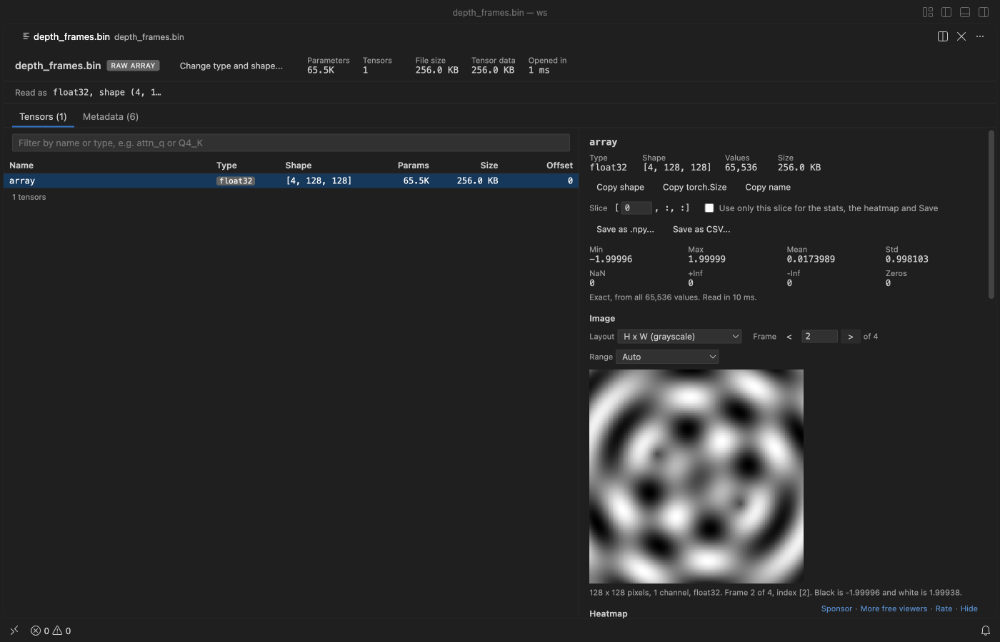

Open files in VS Code and Cursor / Machine learning files
Read a raw .bin array file and turn it into a .npy file
A file written by ndarray.tofile() or a C program holds bare numbers with no header, so no tool can guess its type or shape. Tensor Viewer opens such a .bin, .raw or .dat file in VS Code once you give the value type, the header bytes to skip, the shape and the byte order. You get stats, a heatmap, the values and, for image-shaped arrays such as depth frames, one grayscale picture per frame. "Save as .npy..." writes a real NumPy file that np.load reads, with no Python. Zovo Pro (USD 19 once) adds a scan of every value for NaN, Inf and zeros and a compare of two files, with 3 free tries each.
Free, MIT license. Extension ID zovo.tensor-viewer, version 0.6.6. Needs VS Code 1.90.0 or newer.

Steps in VS Code
- Install Tensor Viewer from the Marketplace, or press Ctrl+P (Cmd+P on macOS) and run
ext install zovo.tensor-viewer. - Right-click the
.bin,.rawor.datfile in the Explorer and pick "Open as Raw Array...". You can also run "Tensor Viewer: Open as Raw Array..." from the Command Palette. - Pick the value type, such as float32 or uint16. Each choice shows how many values the file holds. Then enter the header bytes to skip, which is 0 for files from
tofile(). - Type the shape, such as
4, 128, 128. Use-1once to fill in one size from the file size. Then pick the byte order for types bigger than 1 byte. A shape that does not fit the file is caught before it opens. - Check the result. For frames, the Image section draws one frame at a time; use the arrow buttons or type a frame number. If the numbers look wrong, click "Change type and shape..." at the top and try again.
- Click "Save as .npy..." and pick where to save. Tensor Viewer and NumPy both read the new file with its type and shape. The Metadata tab also shows the matching
np.fromfile(...)line.
Where Zovo Pro saves time
Opening raw arrays, the stats, heatmaps, frame pictures, the Values table, "Change type and shape..." and Save as .npy or CSV are free. The layout you give is remembered for each file in the workspace. Tensor Viewer never writes over the file it shows, and it makes no network calls.
A dump from a sensor or a simulation can hold a few NaN or Inf values, and for big arrays the free stats come from a sample. After you save the array as .npy, Scan Tensors for NaN, Inf and Zeros reads every value, with no sampling. It flags NaN, Inf, all-zero and constant arrays and float values of 10,000 or more, with the exact min, max, mean, std and L2 norm, and saves the report as CSV, Markdown or JSON. The other Pro tool, Compare Two Checkpoints, compares two files value by value, for example two dumps saved as .npy.
With Scan Tensors for NaN, Inf and Zeros (Zovo Pro)
- Open the .npy file you saved and click "Scan all tensors" at the top of the viewer, or right-click it in the Explorer and pick "Zovo Pro: Scan Tensors for NaN, Inf and Zeros".
- A notification shows the progress, and Cancel stops a long run.
- Filter the report to "Only tensors to check" and save it as CSV, Markdown or JSON.
Scan Tensors for NaN, Inf and Zeros works 3 times on your computer before it asks for a license, and a try counts only when you get a result. Opening a file shows no popup and no countdown.
Zovo Pro costs USD 19 once. It is not a subscription, and it turns on the Pro tools in every Zovo extension, not only Tensor Viewer. After a card payment (Stripe) your license key shows on the next page. In VS Code, run "Zovo Pro: Enter Zovo Pro license key" from the Command Palette and paste it. The key is checked on your computer, with no network call. With GitHub Sponsors, pick the "$19 one time" tier, then run "Zovo Pro: I already paid: unlock with GitHub Sponsors" and sign in with the same GitHub account. With PayPal, send USD 19 with "Zovo Pro" in the note and the key comes by email within a day.
A team of 5: USD 59 once, by card or by PayPal. Every rule and every Pro tool is on the Zovo Pro page.
Steps in Cursor, Windsurf or VSCodium
- Open the Extensions view with Ctrl+Shift+X (Cmd+Shift+X on macOS).
- Search for
zovo.tensor-viewerand click Install. Cursor, Windsurf and VSCodium install from Open VSX, where it is published aszovo/tensor-viewer. - If your editor has no gallery, download the .vsix from the Open VSX page and run "Extensions: Install from VSIX...".
- Then use it the same way as in VS Code.
What Tensor Viewer handles
- float16, bfloat16, float32, float64, int8 to int64, uint8 to uint64, complex64, complex128 and bool values.
- Little-endian and big-endian files, and files with a header of any size before the values.
- Stacks and batches such as
(N, H, W)or(N, 3, H, W), drawn one frame at a time in grayscale or color. - Any file through the Command Palette, and
.bin,.rawand.datunder "Reopen Editor With...".
What it does not do
- A raw file cannot be detected by itself. A wrong type or shape shows wrong numbers, not an error.
- Pictures are drawn at most 512 pixels on the long side. 2-channel arrays have no picture view.
- For an array over 2,000,000 values, the stats come from a sample of whole rows, and the panel says so.
- CSV export stops at 20 million values. Use .npy for bigger arrays.
Other options
- NumPy fromfile. In Python,
np.fromfile(path, dtype=np.float32).reshape(4, 128, 128)reads the file andnp.savewrites the .npy. Needs Python and NumPy. - Fiji (ImageJ). A free image program whose File, Import, Raw menu opens raw image stacks once you give the type, size and number of images.
Install counts and Open VSX status were checked on 13 November 2026. Descriptions in quotes are the extensions' own.
Questions
What dtype and shape does my file have?
The file does not say. Use the code that wrote it. The value type list shows how many values the file holds for each type, which helps you spot the right one.
Does it change my .bin file?
No. Tensor Viewer only reads it. Save as .npy and Save as CSV write a new file that you pick.
Will .bin files now always open in Tensor Viewer?
No. Tensor Viewer never becomes the default editor for .bin, .raw or .dat files. Only pytorch_model*.bin files open in it by default.
Does it work in Cursor or Windsurf?
Yes. Cursor, Windsurf and VSCodium install extensions from Open VSX. Search for the extension in their Extensions view and install it there.
More about Tensor Viewer
Read the Tensor Viewer page for every feature and setting, or the source code on GitHub.
Related guides
- NPZ & NPY Viewer, PyTorch & Safetensors on the VS Code Marketplace (also on Open VSX). Shows arrays, shapes and values from .npy, .npz, .pth, GGUF and safetensors files.
- View .npy and .npz NumPy files in VS Code
- A safetensors viewer for VS Code
- Open a .npz file in VS Code
- Compare two PyTorch checkpoints
Zovo Pro and support
Zovo Pro: USD 19 once, every Zovo viewer. It turns on the Pro tools in this extension and in the other Zovo extensions you use. The free features stay free.
After a card payment your license key shows on the next page. Paste it with the command "Zovo Pro: Enter a key".
You can also support the work with no Pro:
Need your format supported?
Open a format request with a sample file, and I reply there whether it can be done. For USD 299 once, through this GitHub Sponsors tier, I add your file format or a missing feature to this extension, with tests, within 7 days.